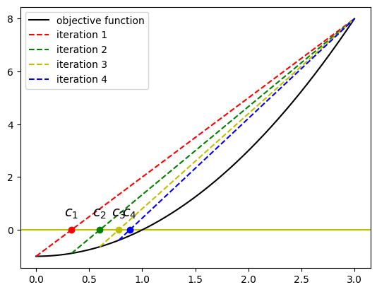

Root Finding#
Root finding is a fundamental problem in numerical analysis and has many applications in science and engineering such as solving nonlinear equations, optimization problems, and differential equations. Usually, a closed form of the root is not available, and we need to compute the root numerically. In this chapter, we will discuss some of the most common methods for root finding.
Bracket Methods#
If \(f\) is a continuous function, and \(f(a)\) and \(f(b)\) have opposite signs, then by the Intermediate Value Theorem, there exists a root of \(f\) on the interval \([a, b]\). The bracket method is based on this fact and iteratively locates the pair of points \(a\) and \(b\) such that \(f(a)\) and \(f(b)\) have opposite signs. The most common bracket methods are the bisection method and the false position method.
Bisection Method#
The simplest bracket method is the bisection method. Once \(f(a)f(b) < 0\), one can select the midpoint \(c = \frac{a + b}{2}\) and check the sign of \(f(a) f(c)\).
If \(f(a)f(c) < 0\), then the root is in the interval \([a, c]\).
If \(f(a)f(c) > 0\), then the root is in the interval \([c, b]\).
If \(f(a)f(c) = 0\), then \(c\) is the root.
For the first two cases, we can repeat the process with the new interval until certain stop criteria are met. Each iteration reduces the size of the interval by half (gaining one bit each iteration), the total number of iterations required to reduce the interval to a certain size is \(\log_2\left(\frac{b - a}{\epsilon}\right)\), where \(\epsilon\) is the desired tolerance.
Once the function \(f\) has a sign change over the bracket \([a, b]\), the bisection method is guaranteed to converge to a root, but it is not very efficient. It is usually used to obtain a rough estimate of the root, which is then taken as an initial guess for a more efficient method.
False Position Method#
The bisection method only uses \(\text{sgn}(f(a))\) and \(\text{sgn}(f(b))\) instead of the function values. The false position method (Regula falsi in Latin) improves the bisection method by taking the function values into account. Instead of selecting the midpoint \(c = \frac{a + b}{2}\), the false position method selects the point \(c\in[a, b]\) that lies on the line connecting \((a, f(a))\) and \((b, f(b))\), that is
The false position method is also guaranteed to converge to a root if \(f(a)f(b) < 0\) and the implementation is quite similar to the bisection method. It usually converges faster than the bisection method, but sometimes exceptions occur.
Note
When \(f''\) keeps the same sign over \([a, b]\), it is not hard to show that only one side of the bracket is updating. The bracket size will never decrease to zero, which is different from the bisection method. In the following, we use an example to illustrate this. The function \(f(x) = x^2 - 1\) over the initial bracket \([0, 2]\). The left endpoint is updating to the root while the right endpoint is fixed at \(2\).
{kind=link}
It is actually easy to improve the false position method by forcing more weight towards the other endpoint. This is called the Illinois method. Once the same side is updated in two consecutive iterations, the Illinois method will use a slightly different formula for \(c\).
Initially, \(\lambda_a = \lambda_b = 1\).
If the previous and current iteration update the left endpoint, then \(\lambda_b = \frac{\lambda_b}{2}\), otherwise reset \(\lambda_a = 1\).
If the previous and current iteration update the right endpoint, then \(\lambda_a = \frac{\lambda_a}{2}\), otherwise reset \(\lambda_b = 1\).
Note
We use the previous example to illustrate the difference between the false position method and the Illinois method. At the second iteration, the Illinois method finds the updating is still on left side, so it modifies right endpoint \(f(b)\) into \(\frac{1}{2} f(b)\) to compute the new \(c\), which makes the selected point \({c}\) closer to the right endpoint than the false position method.

Example 1
Let us try the aforementioned methods to find the root of \(f(x) = x^3 - 2x^2 - 4\) on the interval \([1, 3]\). The root \(x^{\ast}\) can be computed analytically through cubic root formula, which is roughly 2.5943130163548496.
Using the previous methods, we obtain the sequence of selection \(c_n\) and the error \(|c_n - x^{\ast}|\). The tolerance is set to \(|f(c)| < 10^{-6}\). The results are shown in the following table.
False Position Method
iter 1 | 2.0000000000000000000000000 | 5.94e-01
iter 2 | 2.4444444444444446418174266 | 1.50e-01
iter 3 | 2.5621621621621617492792211 | 3.22e-02
iter 4 | 2.5876913365185605364615640 | 6.62e-03
iter 5 | 2.5929610854818996301673906 | 1.35e-03
iter 6 | 2.5940374914642010395482430 | 2.76e-04
iter 7 | 2.5942568846837747997824408 | 5.61e-05
iter 8 | 2.5943015817106331866170876 | 1.14e-05
iter 9 | 2.5943106870264029950590157 | 2.33e-06
iter 10 | 2.5943125418534931370118102 | 4.75e-07
iter 11 | 2.5943129196954899384763849 | 9.67e-08
Illinois Method
iter 1 | 2.0000000000000000000000000 | 5.94e-01
iter 2 | 2.6153846153846154187760931 | 2.11e-02
iter 3 | 2.5847750865051901669744439 | 9.54e-03
iter 4 | 2.5941951587569969106539247 | 1.18e-04
iter 5 | 2.5944267005726100450146987 | 1.14e-04
iter 6 | 2.5943130084597889606357057 | 7.90e-09
Remark 2
Remark 3
The bracket methods need to first locate an interval \([a, b]\) such that \(f(a)f(b) < 0\). A common approach is to sample a few equidistant points in a large interval and then use the sign of the function values to identify the bracket. This is a simple and robust approach, but it may require a large number of function evaluations.